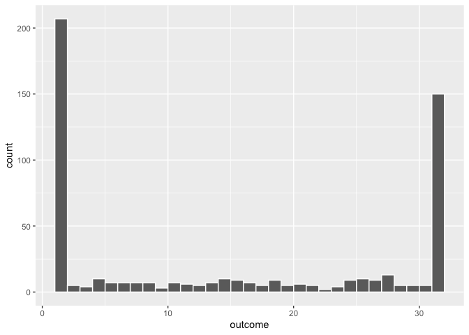

Discrete
Misc
- Also see Regression, Other
- Packages
- {glmnet}
- {contingencytables}
- Companion package for the Statistical Analysis of Contingency Tables book
- {brglm2}
- Estimation and inference from generalized linear models using various methods for bias reduction
- Can be used in models with Separation (See Diagnostics, GLM >> Separation)
- Able to fit poisson and negative binomial models
- Reduction of estimation bias is achieved by solving either:
- The mean-bias reducing adjusted score equations in Firth (1993) and Kosmidis & Firth (2009)
- The median-bias reducing adjusted score equations in Kenne et al (2017)
- The direct subtraction of an estimate of the bias of the maximum likelihood estimator from the maximum likelihood estimates as prescribed in Cordeiro and McCullagh (1991).
- Resources
- Discrete Analysis Notebook - Notes from Agresti books and PSU Course
- Statistical Analysis of Contingency Tables (R >> Documents >> Regression)
- Covers effect size estimation, confidence intervals, and hypothesis tests for the binomial and the multinomial distributions, unpaired and paired 2x2 tables, rxc tables, ordered rx2 and 2xc tables, paired cxc tables, and stratified tables.
- For Diagnostics see:
- {DHARMa} - Built for Mixed Effects Models for count distributions but handles lm, glm (poisson) and MASS::glm.nb (neg.bin)
- Diagnostics, Probabilistic >> Visual Inspection >> Visual Inspection
- Diagnostics, GLM
- With aggregated counts that are bound within a certain range, it can be better to turn the range of counts into percentages (see example) and model those as your outcome
- Distributions
Zero-One Inflated Beta
mod_zoib <- brm(bf(outcome_pct ~ 1), data = example_data, family = zero_one_inflated_beta(), cores = 4) pp_check(mod_zoib)Zero-One Inflated Binomial
- In general, you can have a zero-N inflated binomial
- Example: Aggregated counts from 1 to 32 (Thread)
- If something specific is generating 1 and 32 counts
- Ideally you’d do this, but these require creating bespoke distribution families which is possible in STAN
- If you cannot get zero, then a 0-31-inflated binomial works fine.
- If 0 is possible but it didn’t happen, then do a 1-32-inflated binomial.
- More conveniently, you’d transform the range (1-32) to percentages where 100% = 32, and use zero-one inflated beta (currently available in {brms} or zero-one inflated binomial
- Ideally you’d do this, but these require creating bespoke distribution families which is possible in STAN
- If there is NOT something specific generating the 1 and 32 counts(?)
- You can keep the counts and treat them as an ordered factor
Collapse the counts from 2-31 into a category, so you have 3 categories: 1, 2-31, 32.
Model as an ordered logit
mod_ologit <- brm(bf(outcome_factor ~ 1), data = example_data, family = cumulative, cores = 4) pp_check(mod_ologit)
- You can keep the counts and treat them as an ordered factor
- If something specific is generating 1 and 32 counts
- Distributions
{kind=link}
{kind=link}
{kind=link}
Terms
A saturated model is a regression model that includes a discrete (indicator) variable for each set of values the explanatory variables can take.
- Another case is when there are as many estimated parameters as data points.
- e.g. if you have 6 data points and fit a 5th-order polynomial to the data, you would have a saturated model (one parameter for each of the 5 powers of your independant variable plus one for the constant term).
- Multi-variable models require interactions to be able to cover each set of values that the explanatory variables can take (see 3rd example)
- Since saturated models, perfectly model the sample, they don’t generalize to the population well.
- No data left to estimate variance.
- Examples of Saturated Models
Wages ~ College Graduation (binary)
\[ \operatorname{Wages}_i = \alpha + \beta \:\mathbb{I}\{\operatorname{College Graduate}\}_i + \epsilon_i \]
Wages ~ Schooling (discrete, yrs).
\[ \begin{align} \operatorname{Wages} &= \alpha + \beta_1 \:\mathbb{I}\{s_i = 1\} + \beta_2 \:\mathbb{I}\{s_i = 2\} + ⋯ + \beta_T \:\mathbb{I}\{s_i = T\} &\text{where}\quad s_i \in \{0, 1, 2,...T\} \end{align} \]
- 0 is the reference level; \(\beta\) is the effect of j years of schooling.
Wages ~ College Graduation + Gender + Interaction.
\[ \operatorname{Wages} = \alpha + \beta_1 \:\mathbb{I}{\operatorname{College Graduate}} + \beta_2 \:\mathbb{I}\{\operatorname{Female}\} + \beta_3 \:\mathbb{I}\{\operatorname{College Graduate}\} \times \:\mathbb{I}\{\operatorname{Female}\} + ε \]
- \(\mathbb{E}[\operatorname{Wages}_i | \operatorname{College Graduate}_i = 0, \operatorname{Female}_i = 0] = \alpha\)
- Expected value of Wages for individual i given they’re not a college graduate and are male
- \(\mathbb{E}[\operatorname{Wages}_i | \operatorname{College Graduate}_i = 1, \operatorname{Female}_i = 0] = \alpha + \beta_1\)
- \(\mathbb{E}[\operatorname{Wages}_i | \operatorname{College Graduate}_i = 0, \operatorname{Female}_i = 1] = \alpha + \beta_2\)
- \(\mathbb{E}[\operatorname{Wages}_i | \operatorname{College Graduate}_i = 1, \operatorname{Female}_i = 1] = \alpha + \beta_1 + \beta_2 + \beta_3\)
- \(\mathbb{E}[\operatorname{Wages}_i | \operatorname{College Graduate}_i = 0, \operatorname{Female}_i = 0] = \alpha\)
- Another case is when there are as many estimated parameters as data points.
Null Model has only one parameter, which is the intercept.
- This is essentially the mean of all the data points.
- For a bivariate model, this is a horizontal line with the same prediction for every point
Deviance
\[ D = 2(L_S - L_P) = 2(\operatorname{loglik}(y\;|\;y) - \operatorname{loglik}(\mu\;|\;y)) \]
- \(L_S\) is the saturated model
- \(L_P\) is the “proposed model” (i.e. the model being fit)
Binomial
Example: UCB Admissions
# Array to tibble (see below for deaggregation this to 1/0) ucb <- as_tibble(UCBAdmissions) %>% mutate(across(where(is.character), ~ as.factor(.))) %>% pivot_wider( id_cols = c(Gender, Dept), names_from = Admit, values_from = n, values_fill = 0L ) ## # A tibble: 12 × 4 ## Gender Dept Admitted Rejected ## <fct> <fct> <dbl> <dbl> ## 1 Male A 512 313 ## 2 Female A 89 19 ## 3 Male B 353 207 ## 4 Female B 17 8 ## 5 Male C 120 205 ## 6 Female C 202 391 ## 7 Male D 138 279 ## 8 Female D 131 244 ## 9 Male E 53 138 ## 10 Female E 94 299 ## 11 Male F 22 351 ## 12 Female F 24 317 glm( cbind(Rejected, Admitted) ~ Gender + Dept, data = ucb, family = binomial ) ## Coefficients: ## (Intercept) GenderMale DeptB DeptC DeptD DeptE ## -0.68192 0.09987 0.04340 1.26260 1.29461 1.73931 ## DeptF ## 3.30648 ## ## Degrees of Freedom: 11 Total (i.e. Null); 5 Residual ## Null Deviance: 877.1 ## Residual Deviance: 20.2 AIC: 103.1cbind(Rejected, Admitted)says that “Rejected” is the response variable since it is listed first in thecbindfunction- Can also use a logistic model, but need case-level data (e.g. 0/1)
Deaggregate count data into 0/1 case-level data
data(UCBadmit, package = "rethinking") ucb <- UCBadmit %>% mutate(applicant.gender = relevel(applicant.gender, ref = "male")) # deaggregate to 1/0 deagg_ucb <- function(x, y) { UCBadmit %>% select(-applications) %>% group_by(dept, applicant.gender) %>% tidyr::uncount(weights = !!sym(x)) %>% mutate(admitted = y) %>% select(dept, gender = applicant.gender, admitted) } ucb_01 <- purrr::map2_dfr(c("admit", "reject"), c(1, 0), ~ disagg_ucb(.x, .y) )
Example: Treatment/Control
Disease No Disease Treatment 55 67 Control 42 34 df <- tibble(treatment_status = c("treatment", "no_treatment"), disease = c(55, 42), no_disease = c(67,34)) %>% mutate(total = no_disease + disease, proportion_disease = disease / total) model_weighted <- glm(proportion_disease ~ treatment_status, data = df, family = binomial, weights = total) model_cbinded <- glm(cbind(disease, no_disease) ~ treatment_status, data = df, family = binomial) # Aggregated counts expanded into case-level data df_expanded <- tibble(disease_status = c(1, 1, 0, 0), treatment_status = rep(c("treatment", "control"), 2)) %>% .[c(rep(1, 55), rep(2, 42), rep(3, 67), rep(4, 34)), ] # logistic model_expanded <- glm(disease_status ~ treatment_status, data = df_expanded, family = binomial("logit"))- All methods are equivalent
- “disease” is listed first in the
cbindfunction, therefore it is the response variable.
Poisson
{kind=link}
- Misc
- Interpretation
Effect of a binary treatment
\[ e^\beta = \mathbb{E}[Y(1)/\mathbb{E}Y(0)] = \theta_{\text{ATE%}} + 1 \]
- \(\theta\) is the effect interpreted as a percentage
- \(\mathbb{E}[Y(1)]\) is the expected value of the outcome for a subject assigned to Treatment.
- Therefore, \(e^\beta - 1\) is the average percent increase or decrease from baseline to treatment
- Parameter may difficult to interpret in contexts where Y spans several order of magnitudes.
- Example: The econometrician may perceive a change in income from $5,000 to $6,000 very differently from a change in income from $100,000 to $101,000, yet both those changes are treatment effects in levels of $1,000 and thus contribute equally to θATE%.